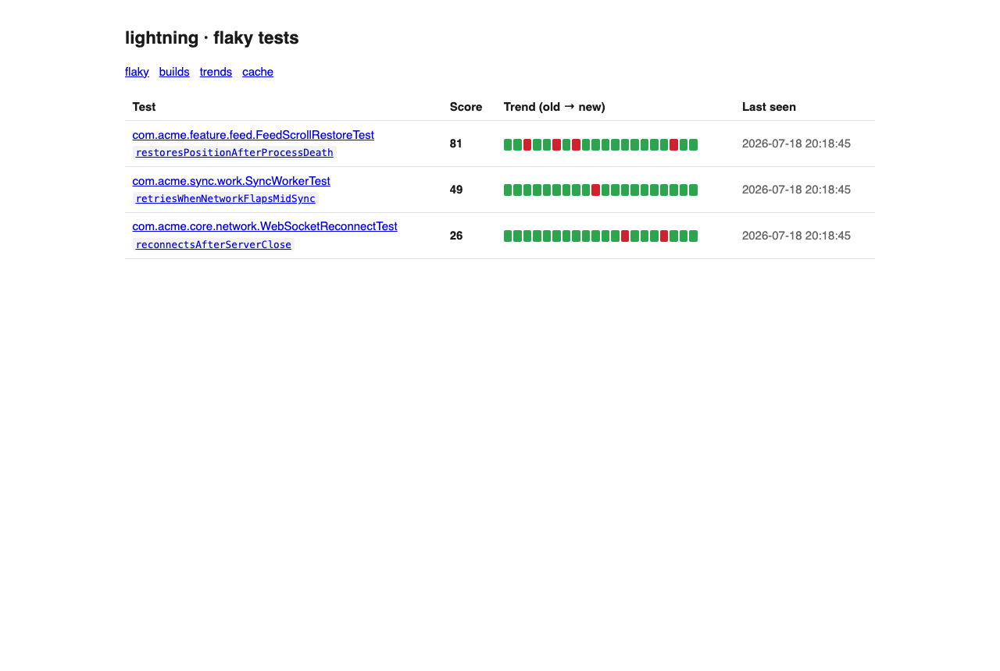
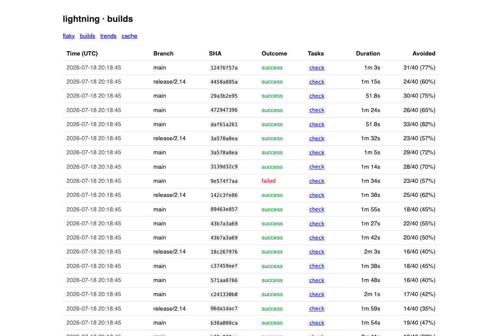
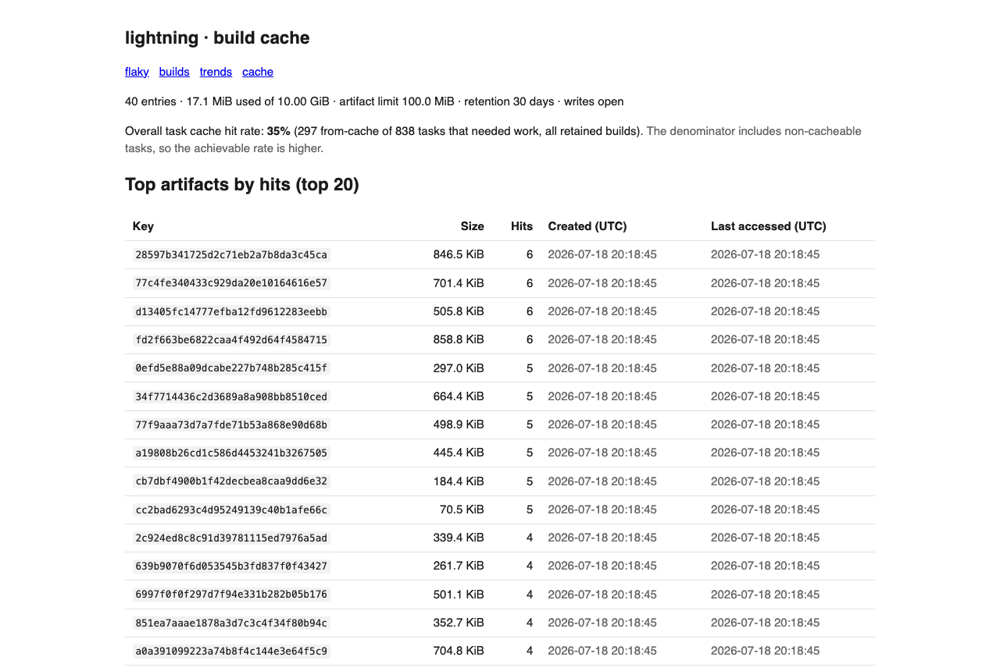

See why your Gradle CI is slow and flaky — then fix it.
A self-hosted, open-source observability & acceleration platform for Gradle and Android monorepos. Flaky-test radar, build telemetry, remote build cache, and diff-aware test selection — a layer above your build, never inside it.
Every number below comes from running lightning against nowinandroid (Google's 45-module Android showcase) and detekt — not from a benchmark lab.
clean with the remote build cachescp it anywhereOne line in CI uploads your JUnit XML. The server keeps per-test history across runs and computes a deterministic flaky score — verdict flips on the same commit, flip-rate over a rolling window. No ML, no black box: you can recompute every score by hand. Genuine regressions don't pollute the list.

A Gradle init script (fail-safe: it can never break your build) reports task timings, cache outcomes and configuration time. See what's slow, what stopped caching, and how much work every build avoided.

Gradle's HTTP build cache protocol in the same binary — with LRU eviction, TTL, optional write token, and analytics on top: hit rates, top artifacts, and the tasks that never hit cache.

lightning sync snapshots your module graph once (typed main/test edges, source sets, per-module tasks). After that, deciding what a PR touches is pure Rust — no JVM starts. The correctness rule is absolute: an extra run is acceptable, a missed test never is.
# nowinandroid, one file changed in :core:model $ lightning affected --base origin/main :core:model + 23 reverse dependencies — 24 of 45 modules # docs-only PR: decided before a JDK exists on the runner $ lightning affected --quiet && echo run || echo skip skip # exit 3, milliseconds # fan heavy runners out over affected modules only $ lightning affected --format github-matrix
lightning-server --addr 0.0.0.0:8080 --db lightning.db — one binary, SQLite next to it, done.lightning upload --server https://… after your tests. A week later you have a flaky radar with history and guilty commits.Buy it if you can — it's excellent. lightning exists for everyone else: open source instead of enterprise pricing, self-hosted so build data never leaves your network, deterministic and explainable instead of ML scoring, and one binary instead of a platform team. And unlike build-plugin approaches, lightning works outside your build: adopting it risks nothing, removing it takes a minute.